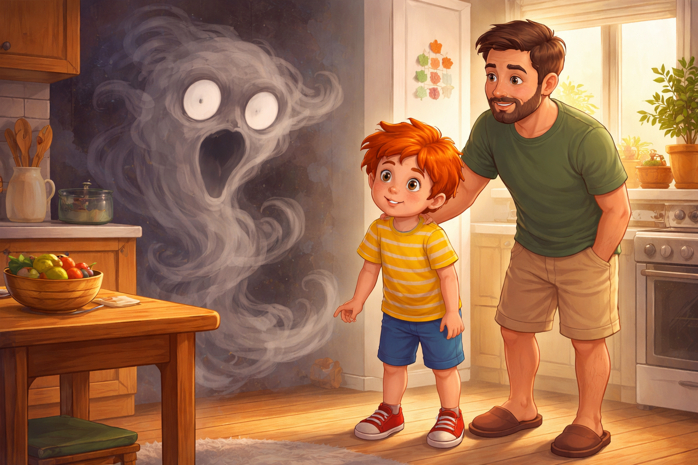
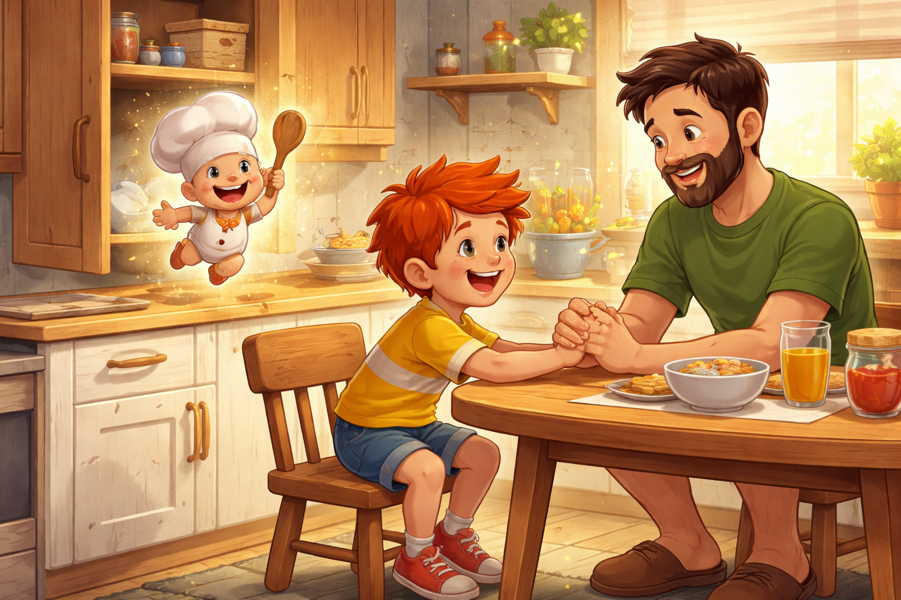
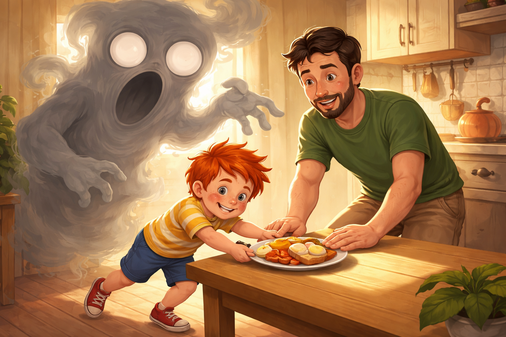
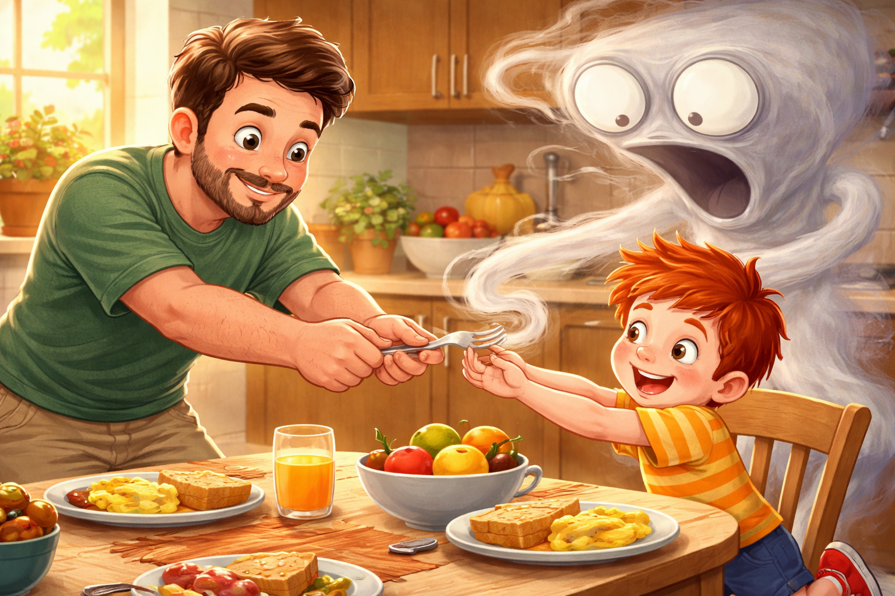
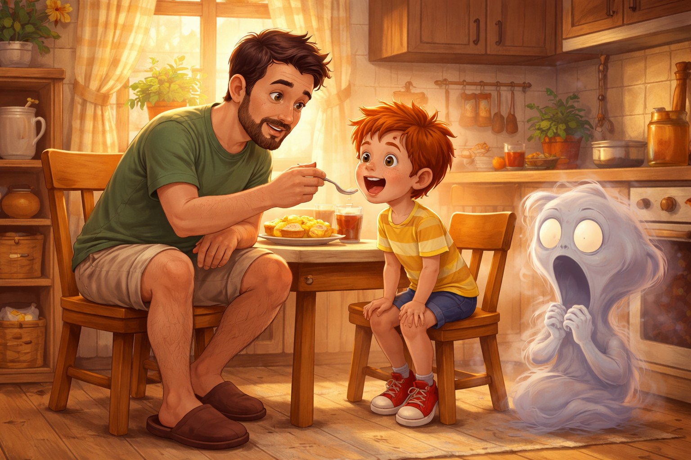
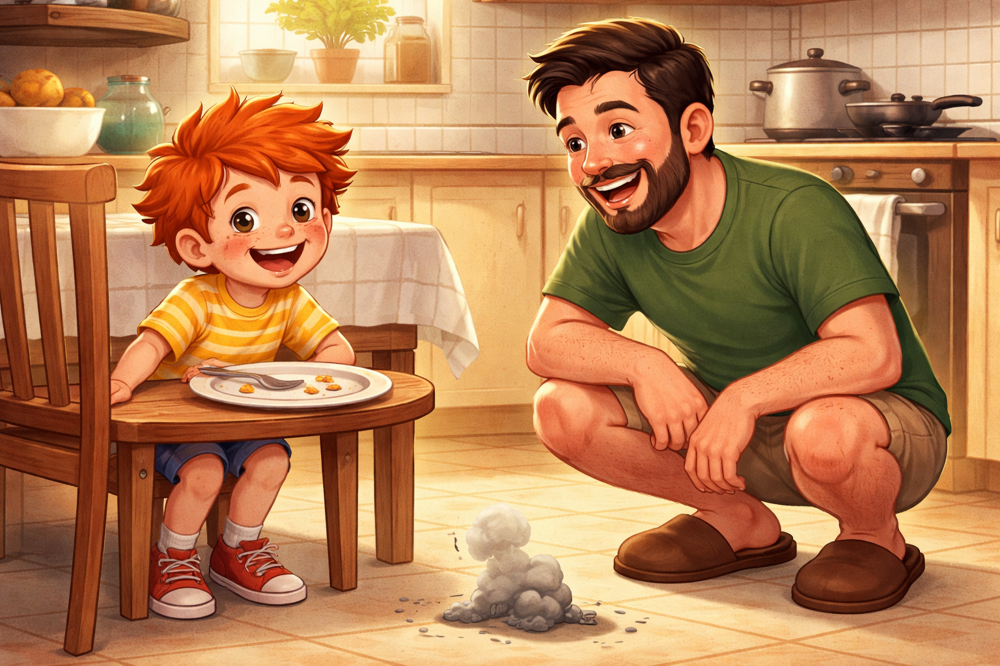
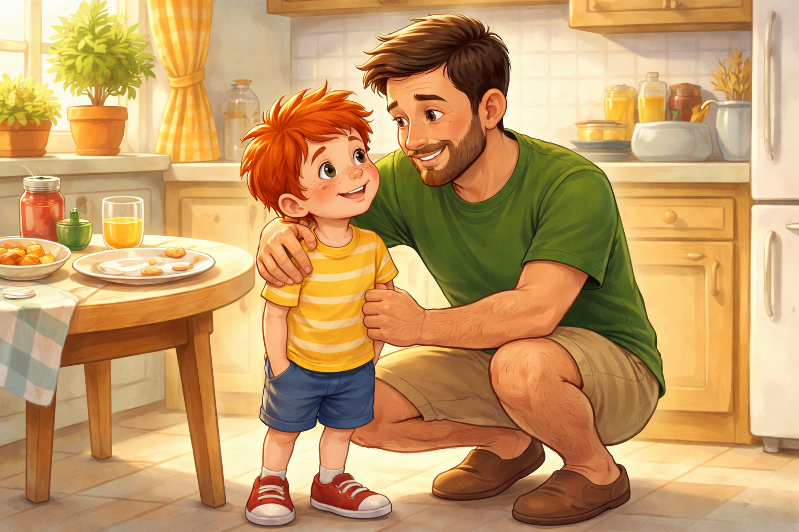

Палавко и Денят на татко
Здравей, аз съм Палавко - и пакостта ми е суперсила!
Днес ще ти разкажа за един специален уикенд. Уикенд с татко. За гладно коремче, за инат, за малко магия и за това как двама души, когато са екип, могат да победят дори най-упоритото чудовище.
Готов ли си? Хайде!
Уикенд при татко

Беше събота сутрин. Палавко беше при татко си, а апартаментът миришеше на препечен хляб, яйца и нещо още по-хубаво - време само за тях двамата.
- Днес е Денят на татко! - каза таткото и усмивката му светна. - Ще закусим като шампиони.
Той сложи чиния пред Палавко. В нея имаше яйце, сирене и домати, подредени като усмивка.
Палавко погледна чинията. После погледна тавана. После погледна чорапа си, сякаш точно там се криеше най-важният отговор на света.
- Не съм гладен - каза той и бутна чинията леко настрани.
Таткото не се скара. Само седна срещу него и сниши глас, сякаш започваше тайна мисия.
- Добре. Но няма да оставим гладното чудовище да победи нашия ден, нали?
Появата на Гладояда

В този миг в ъгъла на кухнята нещо помръдна.
От сенките се проточи сива, прозрачна фигура. Беше тънка като дим, с уста като фуния и очи като две празни чинии.
- Хо-хо-хо... - прошепна глас, който приличаше на тихо пукане на пуканки. - Никой няма да яде днес.
Палавко се ококори.
- Тате... ти виждаш ли го?
- Виждам го - каза таткото и се изправи. - И няма да го оставим да ни развали Деня на татко.
- Аз съм Гладоядът - изсъска чудовището и размаха дългите си прозрачни ръце. - Колкото повече не ядеш, толкова по-силен ставам!
Палавко преглътна.
- А ако хапна?
Гладоядът потрепери.
- Тогава... тогава това изобщо не ми харесва!
Планът на таткото

Таткото плесна с ръце, както правеше винаги, когато имаше план.
- Ето какво ще направим. Играем на "Хапка по хапка". Аз ще бъда защитник на хапките, ти ще бъдеш смелият дегустатор, а Папко Хапко ще бъде магията на вилицата.
- Кой е Папко Хапко? - попита Палавко.
Вратата на шкафа изскърца. Оттам подскочи малко духче-готвач с весели очи, бяла готварска шапка и дървена лъжица, която блестеше като вълшебна пръчка.
- Аз съм Папко Хапко! - извика духчето със звънливо гласче. - Но за тази мисия ще ми трябват двама герои.
- Това сме ние - каза таткото и подаде ръка на Палавко.
Палавко хвана ръката му.
- Добре. Но започваме с много малка хапка.
- Най-смелите мисии често започват точно така - кимна таткото.
Мистериозните препятствия

Гладоядът обаче не смяташе да се предава. Той се изви над масата и изпрати първото си препятствие - Сянката на ленивеца.
Огромна сянка падна върху чинията и скри усмивката от домати и сирене.
- Не се панирай - каза таткото. - Хващаме се за ръце и местим чинията към светлината.
Палавко бутна чинията съвсем внимателно. Таткото я пазеше с ръка, а Папко Хапко завъртя лъжицата си над тях. Сянката се стопи като мъгла на слънце.

После Гладоядът изпрати Липсващата вилица - невидим вихър, който се опита да отмъкне вилицата от масата.
- Не и днес! - каза таткото и я хвана здраво.
- Аз съм тук! - извика Палавко и сложи двете си ръце на масата като истински помощник-командир.
Появи се и Къртицата на скривалището - малка пакостлива сянка, която се опитваше да скрие парченцето яйце под салфетката.
- Намерих те! - засмя се Палавко.
С всяко препятствие Гладоядът ставаше по-неспокоен. А таткото, Палавко и Папко Хапко ставаха все по-добър екип.
Битката с Гладояда

- Хапка първа - каза таткото и подаде малко парченце яйце на Палавко.
Палавко го погледна подозрително, сякаш яйцето можеше да направи салто.
После отвори уста.
- Хап!
Гладоядът се смали с една педя.
- Невъзможно! - изпищя той.
- Хапка втора - каза таткото.
- Хап! - каза Палавко.
- Хап! - каза и таткото, защото в един добър екип никой не оставя другия сам.
Папко Хапко подскачаше около чинията и въртеше вълшебната си лъжица.
- Хапка по хапка, смелост по смелост!
С всяка хапка Гладоядът ставаше все по-малък. От страшна сянка се превърна в тънка сивкава струйка, после в тъжна трохичка, а накрая едва се виждаше.
- Нищо, че сте екип! Пак няма да се справите! - опита се да извика той, но гласът му вече звучеше като прашинка.
Таткото намигна на Палавко.
- Последна хапка?
Палавко се усмихна.
- Последна хапка.
И хапна.
Денят е спасен

Гладоядът въздъхна, стопи се като дим и изчезна.
Кухнята сякаш стана по-светла. Чинията беше почти празна, а Палавко се облегна доволно на стола.
- Коремът ми е доволен - каза той.

- А аз съм горд - каза таткото, прегърна го и се засмя. - Днес бяхме най-силният отбор.
Папко Хапко се поклони важно и се качи обратно към шкафа.
- Ще се видим пак, когато някоя хапка има нужда от смелост!
Палавко погледна татко си.
- Тате?
- Да?
- Може ли Денят на татко да има и втора част?
Таткото се усмихна.
- Разбира се. Но първо измиваме чиниите като шампиони.
Поуката
Понякога не ни се яде. Понякога ни е трудно да започнем. Но когато опитаме малко по малко и когато някой ни помага с търпение, ставаме по-силни, отколкото мислим.
Хапка по хапка, смелост по смелост - така се побеждават и най-упоритите чудовища.